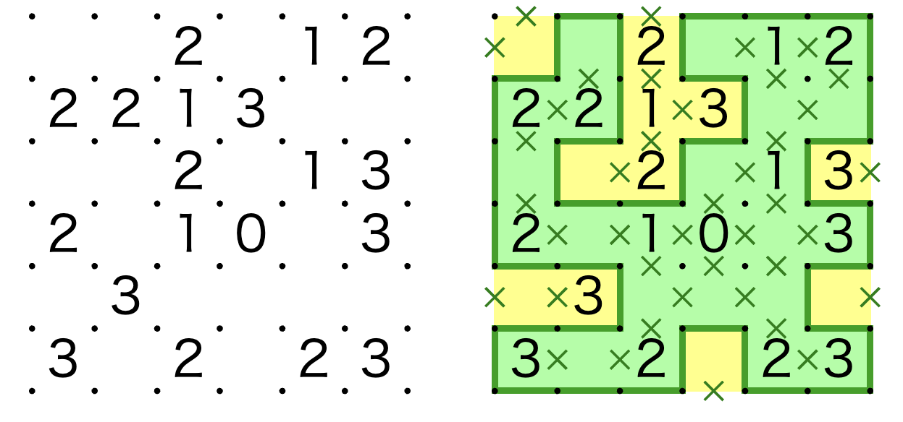
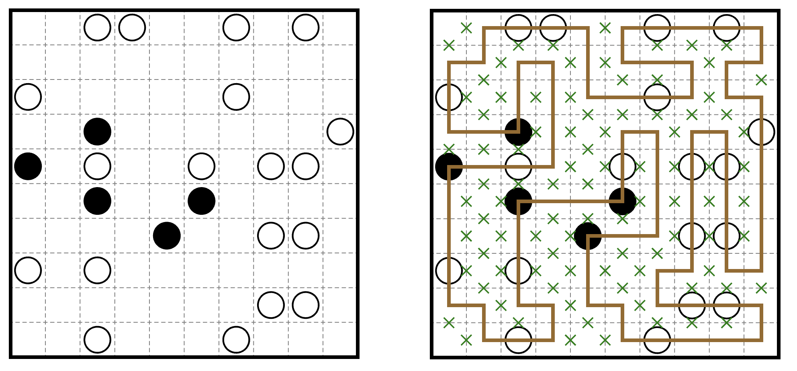

pzprjs URL 编码体系总览¶
本文是「pzprjs 在线逻辑谜题编码规则」的第一篇总述文章。它试图回答三个问题： ① 一个经典的纸笔逻辑谜题是如何被塞进一小串 URL 字符供玩家解谜的？ ② 这套编码系统由哪些"积木"组成？ ③ 后续会怎么介绍这些“积木”？
1. 从一条 URL 说起¶
pzprjs 是线上逻辑谜题工具 puzz.link 的前端：它支持 250 余种谜题的在线制作、求解、分享与求解记录。分享一个谜题只需要一条紧凑 URL，例如：
? 之后的部分 slither/6/6/h712221dh7137158dh872d 就是全部谜题信息：
| 段 | 值 | 含义 |
|---|---|---|
| pid | slither |
谜题类型标识（Slitherlink） |
| cols | 6 |
列数（宽） |
| rows | 6 |
行数（高） |
| body | h712221dh7137158dh872d |
压缩后的谜面正文 |
- 考虑到谜题变体，完整的url设有变体段（
v:xxx/）与 pflag 段（单个非数字字符）——它们是可选段，出现时位于 pid 之后、尺寸之前，语法见第 2 节。 - 世界各地的玩家对于不同谜题可能有不同的拼写，比如 yajilin 有
yajirin旧写法、akari 有lightup旧写法，pzprjs 解析url时候会对pid做谜题路由，把输入兼容到正确的谜题解析方法中，以兼容"历史别名"，这是作为一个成熟在线工具的常见特征。

我们在 pzplus.tck.mn 上可以搜集到庞大的谜题数据，本次收集截止2026-01-29，共获得 63391 个真实谜题，覆盖250 种类型，剔除了谜题复杂变体。统计显示，前 10 高频谜题如下：
| 排名 | 类型 | 数量 | 占比 |
|---|---|---|---|
| 1 | yajilin | 15281 | 24.11% |
| 2 | slitherlink | 4955 | 7.82% |
| 3 | heyawake | 4800 | 7.57% |
| 4 | shakashaka | 2737 | 4.32% |
| 5 | masyu | 2521 | 3.98% |
| 6 | nurikabe | 2288 | 3.61% |
| 7 | akari | 1927 | 3.04% |
| 8 | nurimisaki | 1156 | 1.82% |
| 9 | lits | 1151 | 1.82% |
| 10 | shikaku | 1061 | 1.67% |
2. URL 的完整语法¶
pzprjs 的 URL 解析框架负责把 URL 拆解成标准数据段。现代 v3 格式的完整语法为：
http://<host>/p.html?<pid>/[(v:<variant>/][(<pflag>)/](<cols>)/(<rows>)/(<body>)
各部分按 / 依次切分后，解析按以下顺序进行：
pid谜题路由： 不可缺失，决定标记后续 url 的编解码方式，针对别名 (lightupv.s.akari，yajilinv.s.yajirin) 做了兼容，不可缺失;- 可选变体段：若首段以
v:开头，则取出变体名（如v:black），弹出，标准谜题无该变体段； - 可选 pflag 段：若下一段不是数字，则作为 pflag 弹出；否则视为尺寸开始，常见简单谜题无该
pflag段； - 尺寸段：读
cols、rows两个数字，不可缺失； - 正文：剩余所有段用
/重新拼回，即 body，不可缺失。
pflag（puzzle flag）是这套体系里的"选项位"，它用一个非数字字符放在尺寸之前，表达谜题的变体/格式信息。各谜题通过检测 pflag 里是否含某个字符来决定选项。例如：
| 谜题 | pflag | 含义 |
|---|---|---|
| slitherlink | f |
全边规则变体 slither_full |
| yajilin | o |
回路外侧变体 yajilin_out |
| fillomino | t |
三角形区域变体 fillomino_tri |
| lits | c / d |
新/旧 Applet 格式兼容 |
pflag 还有一段完整的"历史兼容"故事：creek、gokigen、lits 曾用 c/d 区分 Applet 与 v3 格式；icebarn 多次改版 URL；bonsan/kramma 用 c 缩短 URL 等。细节在后续文章展开。

除了 v3 格式，解析器还兼容多个历史 URL 格式：
| 格式 | 判定特征 | 示例 |
|---|---|---|
| ぱずぷれ v3 | ?pid/... 或 ?pid_edit/... / ?pid_play/... |
p.html?slither/... |
| ぱずぷれ Applet | indi.s58.xrea.com/<pid>/(sa\|sc)/ |
http://indi.s58.xrea.com/lits/sa/q.html?/4/4/... |
| カンペン (Kanpen) | www.kanpen.net/<kid>.html?problem= |
https://www.kanpen.net/slitherlink.html?problem=2/3/1_3/0_1_/ |
| へやわけ Applet | www.geocities.co.jp/heyawake/?problem= |
Heyawake 专用 |
| pzpr 文件 | ?pzprv3/<pid>/... |
文件格式，/ 换行为换行符 |
虽然其中的一些（比如 kanpen.net）似乎已经成了互联网失传媒体了...
3. 三种主要编码策略：进制、位打包、Run-Length¶
整个编解码逻辑由一通用原语库（供所有谜题共享的编码积木）与各谜题的基类流程构成。所有谜题共享三套压缩思想：
3.1 用高进制字母表压缩"每格的有限状态"¶
普通文本表示一格状态通常要一个数字或符号，这套体系直接用 36 进制字母表（0-9a-z，36 个字符）把多个格子/状态打包进一个字符：
| 打包方式 | 基数 | 每字符承载 | 典型用途 |
|---|---|---|---|
| 数值直接映射 | 16 | 1 格（0-15） | 数字谜题 |
| 三态打包 | 27 | 3 格 (3进制，权重9/3/1) | 圆圈/三分格 |
| 位打包 | 32 | 5 格（5 bit） | 边界、二元属性 |
| Run-Length 计数 | 36 | 一个"连续空格数" | 稀疏网格 |
3.2 位打包（bit-packing）¶
对于"有/无"这类二元状态（如一条边是否画线、一个格子是否冻结），会把格子的边以 5 位一组，每位是 0或者1的二进制，装进一个 base-32 字符（权重 [16,8,4,2,1]）。以边界编码 Border（边界位打包）为例，它把内部边按编号顺序打包：
- 先竖边：共
(cols-1) × rows条（左右相邻格之间的边界，编号靠前）； - 再横边：共
cols × (rows-1)条（上下相邻格之间的边界，编号靠后）。
每 5 条打包成一个 base-32 字符。10×10 盘面的边界部分因此只需要 (9×10)/5 + (10×9)/5 = 18 + 18 = 36 个字符。
3.3 数值分段前缀（Number16）¶
数字谜题里数值跨度极大（Nurikabe 可到 6 位数），固定长度浪费空间，于是按大小分档，小数字用少字符、大数字加前缀字符：
| 数值范围 | 编码 | 例子 |
|---|---|---|
| 0–15 | 1 个 hex 字符 | 6 |
| 16–255 | - + 2 hex |
-a3 |
| 256–4095 | + + 3 hex |
+4b2 |
| 4096–8191 | = + 3 hex |
=001 |
| 8192–12239 | @ + 3 hex |
@3ff |
| 12240–77775 | * + 4 hex |
*0001 |
| 77776–1126351 | $ + 5 hex |
$00000 |
这套"可变长数值"方案 Number16（16 进制数字编码）会在后续文章展开。
3.4 Run-Length：把稀疏网格的空格合并¶
网格谜题普遍稀疏：大量格子没有数字。若逐格写 0 会浪费字符。编码器用一个计数器累计连续空格，攒到一定数量就用一个 base-36 字符（g-z，即 16-35）表示"跳 N 格"，数值格直接写字符。这样稀疏盘面的 body 可以做到极短。
例：
slither/10/10/gb812c8bj...中，b等字符即包含"跳格"信息（后续文章会展开）。
4. 编码原语总清单¶
这套体系的"积木"是若干通用编码原语（scheme）。每个原语解决一类"怎么把盘面信息写成字符"的固定任务；各谜题按自己的规则、以固定顺序调用它们。总清单如下：
| 方案名 + 中文说明 | 覆盖谜题（高频者加粗） |
|---|---|
| 4Cell（0–4 数值单元格）：一字符同时表达"数值 + 后面空格的占位"，稀疏空段用跳格压缩 | slitherlink、shakashaka、akari 等 |
| 1Cell：稀疏单值（每格一个稀疏数字） | haisu、pmemory、tents |
| 4Cross：0–4 交叉点数值（数字落在格点而非格内） | heyawake（sumiwake 变体）、gokigen、creek |
| Number10：0–9 数值 | swslither 等 |
| Number16（16 进制数字编码）：大范围数值（0~112 万），前缀分档 + 跳格 | nurikabe、shikaku、fillomino、kurodoko 等 |
| Number10or16：按需选 10/16 | 兼容类 |
| ArrowNumber16（箭头数字编码）：方向 + 数字，方向折叠进首字符并暗示数字位数 | yajilin、lixloop |
| Border（边界位打包）：边/区域边界，每 5 条边 1 个 base-32 字符 | heyawake、lits、yajilin(区域)、fillomino 等 100+ |
| RoomNumber16（房间数字编码）：Number16 作用在"房间"而非"格子"上 | heyawake、yajilin(区域) |
| Circle（三态圆圈编码）：每 3 格打包进 1 个 base-27 字符，定长无跳格 | masyu 等 |
| CrossMark：交叉点黑点 | 点型谜题 |
| Dot：网格点标记 | 点型谜题 |
| Binary：二元属性位打包（冻结/空等两态） | icebarn 类谜题 |
5. 编码主流程¶
所有谜题的 URL 生成与解析都遵循同一套流程，只是"积木的拼法"不同。
flowchart LR
%% 左侧：解码
subgraph Decode [解码：URL → 盘面]
direction TB
D1[① 按 / 切段<br/>解析变体v、pflag、尺寸、正文]
D2[② 按尺寸创建空盘]
D3[③ 顺序消费正文，原语重建盘面]
D4[④ 重建边界、房间辅助结构]
D1 --> D2 --> D3 --> D4
end
%% 右侧：编码
subgraph Encode [编码：盘面 → URL]
direction TB
E1[① 顺序调用原语，拼接正文]
E2[② 追加尺寸，可选v变体、pflag]
E3[③ 拼接片段生成完整URL]
E1 --> E2 --> E3
end
Decode --- Encode整个 body 的解析就是一个顺序消费的流：每个原语从正文开头读掉自己需要的一串字符，剩下交给下一个原语。因此原语的调用顺序即是 URL 中字段的顺序，不同谜题的字段排列差异都体现在各自的拼法里。
例如：
- Heyawake 的顺序是"房间选项 → 边界 → 房间数字"；
- Slitherlink 是"4Cell 数值"；
6. 为什么要压缩编码¶
很简单，因为要省长度。以slitherlink 为例子，这个url：
https://puzz.link/p?slither/10/10/gbgbi560122agdj177217bgdj25658ao620786bm5656a，如果逐格子地表示状态，需要100个字符，而如果用压缩后的字符来表示，只需要 45个，55% 的缩减。
| 编码方式 | 字符数 | 说明 |
|---|---|---|
| 逐格编码 | 100 | 每个格子一个字符（0-4、-、?），等长于网格面积 |
| 稀疏列表 | 215 | 行,列,值;行,列,值;...格式，每个线索约 6 字符 |
| number4 | 45 | puzz.link 实际使用的方案 |
number4 相较于逐格编码节省了 55%，相较于稀疏列表节省了 79%。随着网格增大和空置率提高，这一优势会更加显著 —— 因为 number4 的编码长度大致正比于线索数量而非网格面积，而逐格编码始终正比于网格面积。
更一般地，设网格大小为 \(N = R X C\)，线索数量为 \(K\)，线索密度为 \(d= K/N\)：
- 逐格编码：\(N\) 字符
- number4 最优情况（所有线索相邻排列，无大量连续空格）：约 \(K\) 字符
- number4 典型情况（线索分散，有大量连续空格）：约 \(K＋ \frac{N - K}{20}\) 字符（每 20个连续空格需一个 2）
举个例子，如下这个大规模数回，尺寸（31 行45 列，共计 455个提示数（占比32.6%）以及对应位置，最终表示下来的URL（不算开头）共 610 个字符，仅用了比原始提示数多 34% 的字符就完整地进行了表示*，所需长度为逐格编码的 43%
7. 「待填坑的」各谜题盘面能力总览¶
下表归纳本系列各分篇或许会涉及谜题的盘面元素（谜面里会出现哪些东西）与变体 / 别名（规则如何变化、URL 里如何体现）。逐字符的推演见对应分篇。
| 谜题（分篇） | 支持的盘面元素 | 变体 / 别名 |
|---|---|---|
| Slitherlink / Shakashaka / Akari | 数字 0–4、空格、黑墙 .（空格与黑墙仅 Shakashaka / Akari 使用，Slitherlink 无墙概念） |
Slitherlink pflag f（完整回路显示）；Akari 输入兼容旧名 lightup、输出统一 akari；同族 swslither 改用 Number10 记录羊/狼 |
| Masyu | 白丸、黑丸、空格（三态） | pflag f（loop_full：线段必须通过全部格子）；显示偏好"裏ましゅ"白黑对调（不写入 URL） |
| Nurikabe / Shikaku / Fillomino / Kurodoko / Nurimisaki | 数字（0–1126351 分档）、空格、黑格 . |
Fillomino pflag t（三角形变体）+ 可选给定区域边界；Kurodoko / Nurimisaki 共用编码（Nurimisaki 直接继承），同族还有 cave / teri / cityspace |
| Heyawake | 房间分区（区域边界）+ 房间数字（每房间至多一个） | 变体 pid：ayeheya、oneroom、akichi（pflag x）、sumiwake（数字改放在格点上） |
| Yajilin | 箭头 + 数字（可为 ?）、空格、特殊标记 + |
pflag o（黑格全在回路外侧）、b（显示类型）；旧名 yajirin 归一到 yajilin；区域变体 yajilin-regions 用 Border + 房间数字（无箭头） |
| LITS | 只有房间分区（区域边界） | pflag c / d（新旧格式兼容）；一族还有 norinori、invlitso（独立 pid，非 v: 变体） |
总的来说，编码方案是"积木"，谜题是"搭法"。同一块积木（如 Border 边界位打包）在 Heyawake 里表达"房间边界"、在 LITS 里是谜面的全部、在 Fillomino 里是"可选的分割线"；它们读 URL 时用同一套语法，含义由谜题规则决定。
8. 求解过程 = 一串"操作指令"(如 mouse,left,3,5)¶
除了盘面本身，pzprjs 还把一次完整的求解过程拆成一条条原子操作指令——可以回放、撤销，也能序列化存成"求解记录"。这套体系分两层：
- 输入指令层：驱动求解的"台词"，测试脚本
test/script/*.js与test/puzzle/input_test.js（execinput）里写的就是它们； - 内部操作层：真正写入撤销栈、可存盘的"操作记录"（
src/puzzle/Operation.js）。
8.1 输入指令一览（execinput 语法）¶
| 指令 | 语法 | 含义 | 示例 |
|---|---|---|---|
newboard |
newboard,W,H |
按宽×高新建空白盘 | newboard,5,2 |
playmode/editmode |
playmode[,输入模式] |
切到求解 / 编辑模式（可带输入模式） | playmode,shade |
mouse |
mouse,{按键},{坐标…} |
一次鼠标手势：点 / 拖 / 多段折线 | mouse,left,1,1,9,1 |
key |
key,{键}[,{键}…] |
一次键盘输入序列（每个键按下并松开） | key,1,right,- |
cursor |
cursor,X,Y |
把输入焦点移到指定格 / 板外件 | cursor,1,1 |
clear |
clear |
清空全部输入 | clear |
ansclear |
ansclear |
只清"答案"（求解层） | ansclear |
subclear |
subclear |
只清"辅助记号" | subclear |
setconfig |
setconfig,{键},{值} |
设置运行选项 | setconfig,use,1 |
flushexcell |
flushexcell |
重建棋盘外的额外格 | flushexcell |
8.2 mouse 指令详解¶
mouse,left,1,1,9,1 内部等价于 inputPath("left", 1,1, 9,1)：在 (1,1) 按下 → 依次向每个后继点拖动（内部按 0.5 格步长插值成若干 mousemove）→ 在最后一点松开。
| 组成部分 | 语法 | 说明 | 示例 |
|---|---|---|---|
| 按键 | left / right |
左键=主操作，右键=副操作（画×、清除等） | mouse,right,3,1 |
| 连点 | leftxN / rightxN |
同一位置连续点击 N 次 | mouse,leftx2,1,1 |
| 修饰键 | alt+left |
按住 Alt 拖拽（如连画×） | mouse,alt+left,1,1,5,1 |
| 坐标 | ,X,Y[,X,Y…] |
原始坐标，1 单位 = 半格 | mouse,left,0,0,2,0 |
| 板外件 | ,bank,{idx} |
点击 bank（配件栏）中第 idx 个件 | mouse,left,bank,0 |
坐标约定：mouse 坐标是"半格原始坐标"，格心在奇数、格点/边界在偶数。格子 (x,y) 的中心 = 原始 (2x-1, 2y-1)。于是：yajilin 点格子 (1,1) 用 mouse,left,1,1；slitherlink 从左上角格点起笔跨一条边用 mouse,left,0,0,2,0。
8.3 key 指令详解¶
key,{键}… 把每个键"按下再松开"各执行一次；连续多键用于输入多位数（key,1,0 = 输入 10）。
| 键 | 含义 | 示例 |
|---|---|---|
0–9、a–z |
数字（36 进制，>9 用字母） | key,1,0 输 10 |
- / + |
数值减一 / 增一（越界则循环） | key,- |
up/down/left/right |
移动输入光标 | key,right |
BS |
消去 / 退格 | key, |
shift+…、alt+…、ctrl+…、meta+… |
修饰键组合 | key,shift+right |
alt+h/j/k/l |
等效左右上下方向键 | key,alt+j |
数字"按下"的行为受 setconfig,use,1 / use,2 影响（点击填数 / 直接填数两种模式）。
8.4 内部操作记录（撤销栈的序列化格式）¶
每次鼠标/键盘操作，OperationManager 生成一条 Operation 写入历史栈；序列化后即"求解记录"里保存的那行字符串。
| 操作类 | 序列化格式 | 含义 |
|---|---|---|
| ObjectOperation | {组}{属性},{bx},{by},{旧值},{新值} |
单个对象属性变更（最常见） |
| ObjectOperation2 | CR,{bx},{by},[旧数组],[新数组] |
整组数字数组替换 |
| BoardClearOperation | AC |
清盘 |
| BoardAdjustOperation | AJ,{名字} |
盘面整体调整（旋转等） |
| BoardFlipOperation | AT,{名字},{x1},{y1},{x2},{y2} |
翻转/旋转一个矩形区域 |
| TrialEnterOperation | TE,{旧},{新} |
进入"假设"层 |
| TrialFinalizeOperation | TF,[位置,…] |
确定假设为真 |
ObjectOperation 的对象组与属性码（Operation.js 的 STRGROUP/STRPROP）：
| 组码 | 对象 | 属性码 | 属性 | 含义 |
|---|---|---|---|---|
| C | cell 格子 | U / N / Z | ques / qnum / qnum2 | 题目值 / 数字 / 数字2 |
| X | cross 格点 | C / M | qchar / anum | 字符 / 自动数字 |
| B | border 边 | D / A | qdir / qans | 方向 / 答案 |
| E | excell 额外格 | S / K / B / L | qsub / qcmp / snum / line | 辅助 / 组合 / 子数字 / 线 |
例：
CN,1,1,0,4= 格子 (1,1) 数字从 0 改到 4；BL,1,1,0,1= 边 (1,1) 画线从无到有；CS,2,3,0,1= 格子 (2,3) 画辅助圈；CB2,1,1,0,3= 格子 (1,1) 的子数字位 2 改为 3。
8.5 历史栈如何组织：分组、合并、撤销、试错¶
- 分组（OperationList）：一次"按下→拖动→松开"是一个操作组，组内共享一个时间戳；拖拽途中的连续变更用
chainflag挂进同一组，避免一条线生成几十条历史。 - 合并（isModify）：同一位置连续改数值型属性、且新值==上一条旧值时，直接覆写不新增——所以某格 "1→2→3→4" 只占一条历史。
- 撤销 / 重做：
undo()/redo()按"组"整体回退/重放，undoall()/redoall()一路退到头。 - 假设模式（Trial）：
enterTrial()记TE并把位置压入trialpos，此后撤销被限制在假设起点内；acceptTrial()记TF转正；rejectTrial()回卷到假设起点并丢弃其后记录。 - 持久化：整条历史可用
encodeHistory()序列化成{type:"pzpr", version:0.4, current, trialpos, datas:[…]}——这就是"求解记录文件"里保存的内容。
8.6 完整求解过程示例（yajilin：画黑格 + 画圈 + 撤销）¶
每一步都落成一条/一组内部 Operation 写进 opemgr.history；正是这一串 mouse,left,3,5 式的指令，让 pzprjs 能够回放、撤销、保存并分享整个求解过程。